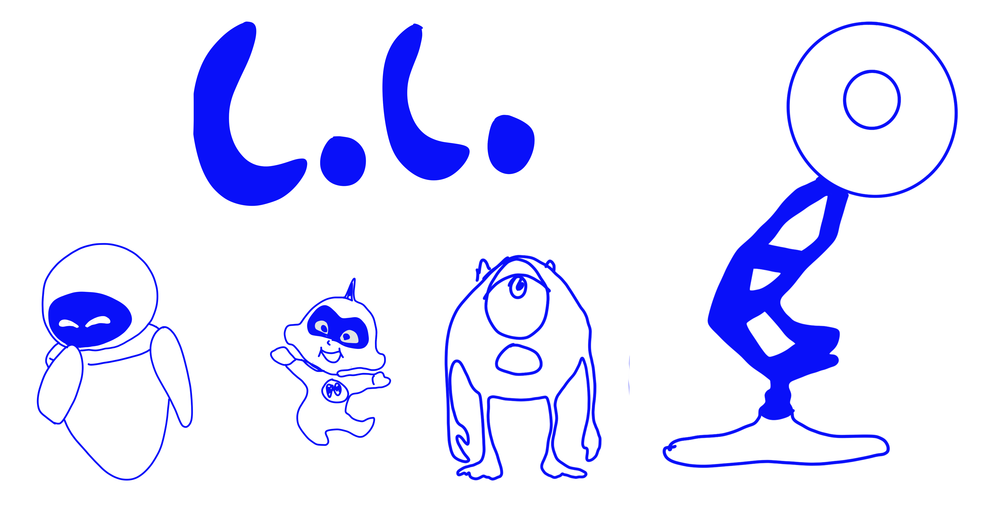

When Pixar started out as a small company, they pushed the boundaries of computer animation. However, it was not only technology that put the company on the map, but also its knack for telling a great story.
Have you seen all of their movies? Let’s take a dive into Pixar history!
1. When Pixar got stuck in negotiating a new deal with Disney, Disney started production on Toy Story 3 without the involvement of Pixar.
2. Up, Up and Away!
The entire canopy of balloons in Up comprised of 10,297 balloons.
3. Video Store-y After the success of Aladdin sequel The Return of Jafar, Disney originally wanted to release Toy Story 2 as a direct-to-video sequel.
4. Growing pains
The size of the emotion console in Inside Out expands and grown more complex as Riley gets older.
5. In the bin
Pixar canceled the development of the film Newt, because the storyline was too similar to Blue Sky’s Studios’ Rio.
6. Scraps
Toy Story 2 featured a few scenes that were originally conceived for the first film.
7.
The ideas for A Bug’s Life, Wall-E and Finding Nemo were all conceived during the same lunch meeting between key Pixar creatives.
8. Crash Out
A very early concept of the movie Inside Out featured an 8-year-old girl who was knocked out by a branch while playing in the woods and suffered short term memory loss.
9. Tastes differ
In order to appeal to audiences all over the world, Pixar makes little tweaks to films when they are released in other territories. In case of Inside Out, they made 28 changes to 45 shots.
10. Not Woody enough
Disney almost shut down the production of Toy Story because they deemed Woody too sarcastic.
11.
During the production of Toy Story 2 almost 90% of the finished work was accidentally deleted from the Pixar servers.
12. Wall-E-D2
Wall-E’s “voice” was created by legendary sound designer Ben Burtt, who is also well known for his work on Star Wars.
13.
Barbie was set to appear as one of the toys in Toy Story, but Mattel rejected the idea. As a result, Pixar created the character of Bo Peep to take her place.
14. The director of Jaws, Steven Spielberg, named the mechanical shark after his lawyer, Bruce Ramer.
15.
Toy Story 2 was a milestone in movie history, as it was the first film ever to be created, mastered, and shown digitally.
16. A quicky
A Bug’s Life holds the record for Pixar’s shortest development and production cycle to date.
17. Long story short…
WALL-E’s story development was so complex that it required 125,000 storyboards, while previous Pixar films only required 75,000 storyboards at most.
18. Doc Hudson from the movie Cars was played by Paul Newman, who was also a race car driver in real life. Cars was Newmans’ last and highest grossing movie.
19. he Incredibles director Brad Bird made the actor who played Dash run laps around the studio the create an authentic out-of-breath voice for the character.

20. Rendering
In its first years, Pixar only made money from developing the Renderman software that is used as an industry standard and animating commercials for brands such as Tropicana and Coca-Cola.